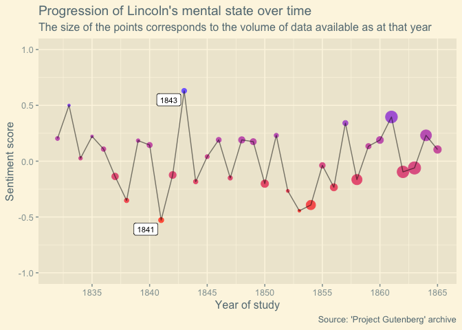
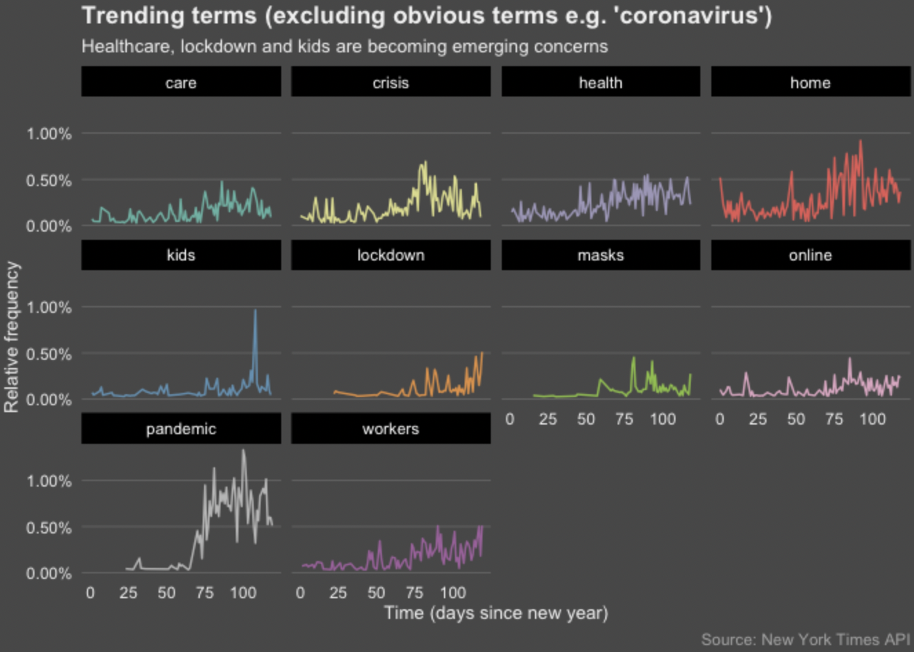
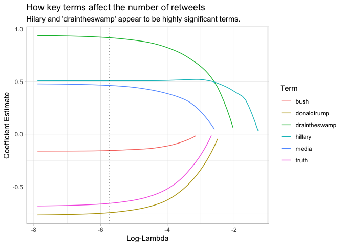
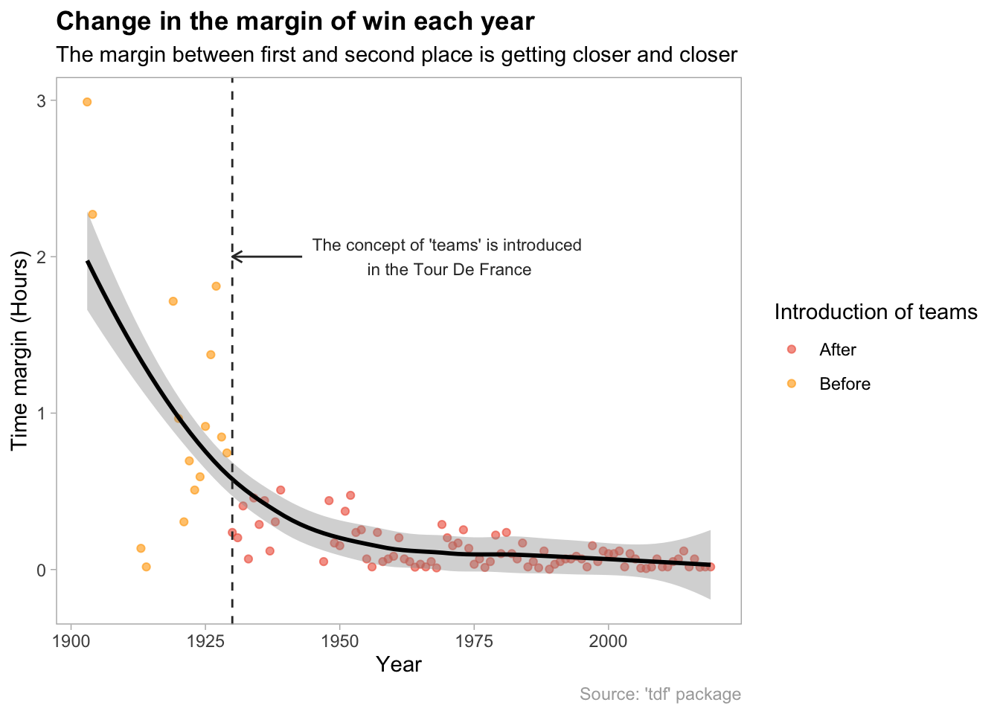

About
- I am a Portfolio Optimisation Lead at Tokio Marine Kiln. My job mainly involves software development in the programming language R
- I like to blog about data science
- I try to engage in open source projects and address queries on StackOverflow
- Some of my favourite hobbies include studying 中文 and playing the piano
Projects
For full coverage, please see my GitHub page
-

Sentiment analysis
A deep dive into Abraham Lincoln's letter archive
-

Topic modelling
An exploration of the virality of words & topics at the height of the COVID-19 pandemic
-

Analysing political tweets
How did one very infamous politician generate so much buzz on Twitter?
-

Analysing Tour De France data
What does it take to win the Tour De France?